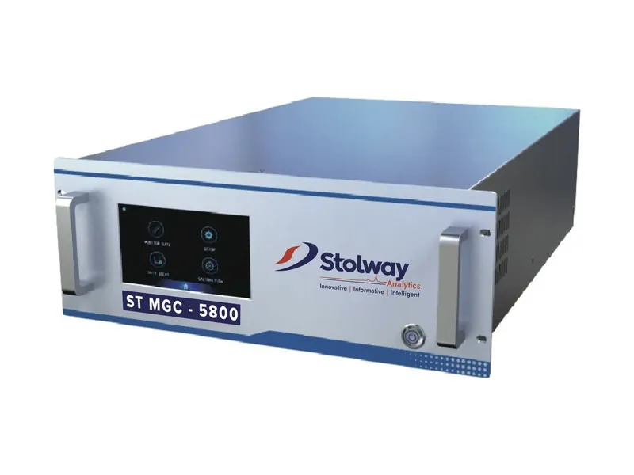
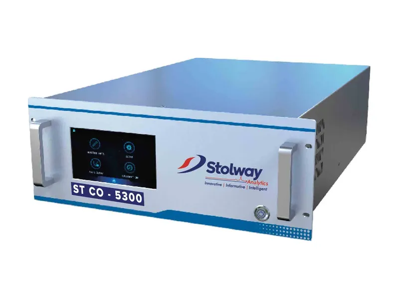
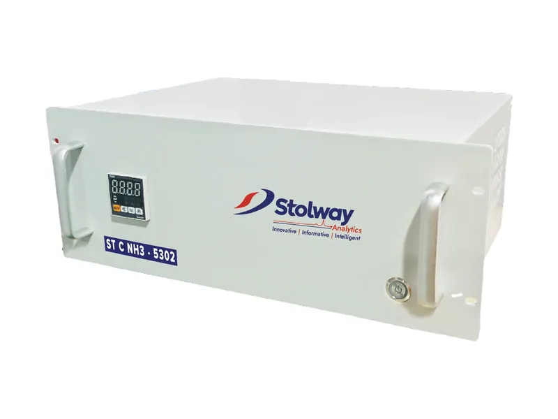

ST MGC-5800 Multi Gas Calibrator
Dynamic dilution calibrator using high-precision mass flow controllers to supply zero and span gas to analysers, with optional ozone generator and UV photometer.
- Principle
- Proportional dilution
- Standard gas inputs
- 4
- Flow control accuracy
- ±1%
- Options
- Ozonator & UV photometer
Overview
Product Overview
The dynamic calibrator uses high-precision mass flow controllers and standard gas to supply gas for zero and span testing of analysers by proportional dilution. It can supply four gas sources simultaneously; the optional ozonator and ultraviolet photometer output high-precision ozone and NO₂ standard gas.
Two high-precision mass flow controllers pass a large flow of diluent (zero) gas and a small flow of standard gas, which are mixed evenly in a quartz gas-phase titration chamber to give a proportionally diluted standard gas. The ozonator uses a UV photometer to accurately control oxygen ionisation and produce high-precision O₃.
At A Glance
Features & Applications
Key features
- High-precision Swiss mass flow controllers.
- High dilution ratio and fast response.
- Quartz gas-phase titration chamber with multiple calibration gas interfaces.
- Continuous self-check with alarm, including light intensity attenuation.
- Bidirectional RS232 port for remote control; working parameters available digitally.
- Colour touchscreen; large memory stores historical data automatically.
- Task software for monitoring test data during operation.
- Optional ozonator and photometer.
Applications
- Analyser zero and span calibration
- Ozone and NO₂ standard gas generation
Specification
Technical Specification
Typical values. Ask us for the datasheet for your configuration.
| Dilution gas flow range | 0–5 SLPM, 0–10 SLPM or 0–20 SLPM (optional) |
|---|---|
| Standard gas flow range | 0–50 sccm, 0–100 sccm or 0–200 sccm (optional) |
| Flow control accuracy | ±1% |
| Flow linearity | ±0.5% |
| Flow control repeatability | ±0.2% |
| Standard gas input ports | 4 |
| Diluent gas inlet | 1 |
| Ozone module output (optional) | 0.1–6 µmol/mol (ppm), error ±1% |
| Power requirement | 200–240 V, 50/60 Hz, 400 W |
| Analog output | 10 V, 5 V, 1 V, 0.1 V (optional) |
| Communication | RS232, RS485; Ethernet (optional) |
| Weight | 14.06 kg (basic unit); 17.78 kg with photometer, titration chamber and ozonator |
| Working temperature / humidity | 15 °C to 35 °C; 0–85% RH |
Not sure it fits your application?
Tell us what you need to measure, the ranges, the process conditions and the hazardous area classification. We diagnose your requirements first, then tailor the solution.
Explore More
Related Products

ST CO-5300 CO Analyser
NDIR carbon monoxide analyser providing accurate, reliable ppm-level CO detection for atmospheric monitoring.
View product
ST C NH3-5302 Ammonia Converter
Thermal converter used with a nitrogen oxide analyser to measure ammonia (NH₃), oxidising NH₃ to NOx over precious-metal catalysts at high temperature.
View product
Smart Sampling System (SSS)
Solves persistent plugging problems in CEMS applications by continuously delivering stack sample gas to any CEMS analyser, including severe-service applications in hazardous area locations.
View product